Decoro Così - adesivi e stickers murali
Una nuova azienda, un nuovo marchio tutto dedicato agli stickers e l'arte di decorare . .Nata a Trento nel 1985, decoro così si fa strada nelle pellicole adesive, stampe su vetro, insegne e tutte le superficie dove è possibile applicare stickers e decori. .Negli anni è diventata un'azienda leader nel settore sia per le tecniche sia per le moderne stampe sempre innovative . .Nel 1990 si è sperimentata nelle decorazioni per interni privati come cucine, camerette e tutti gli ambienti di una casa. .Ed è così che quest'azienda si è affermata dando libero sfogo alla creatività e si è resa nota in:- DECORAZIONI MURALI
- ADESIVI IN VINILE
- SPECCHI SAGOMATI
- LAVAGNA
- ADESIVO FERROSO
- MAGNETICO
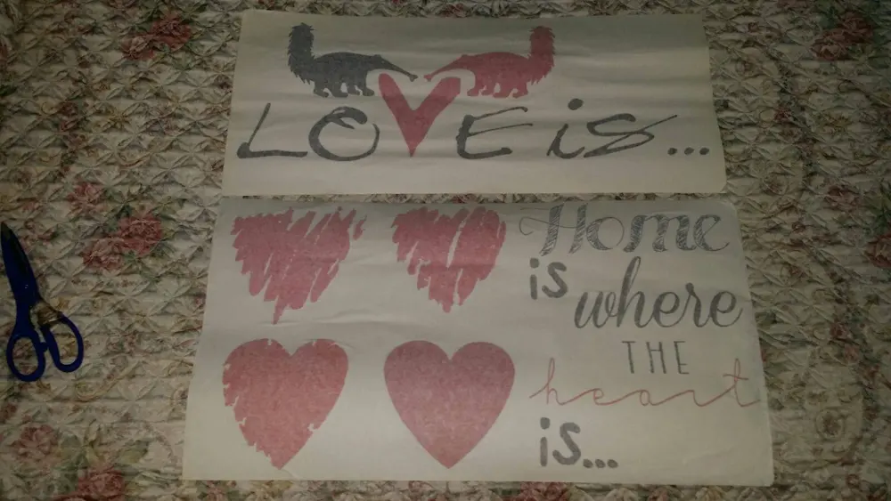
Per acquistare il FORMICHIERE IN AMORE Clicca QUI

Dopo aver raccontato un pò la storia di questo marchio, voglio mostrarvi gli adesivi murali che ho utilizzato per decorare alcune pareti di casa mia. .
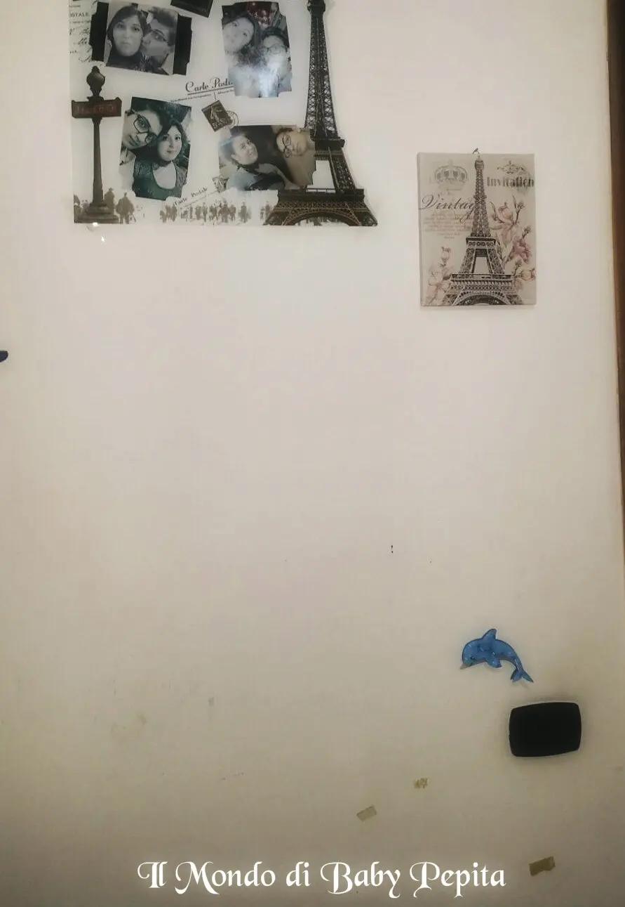
Questa parete della mia cameretta, si può notare, ho provato in vari modi a coprire macchie ma con scarsi risultati. .Ho approfittato così, degli adesivi che mi sono stati omaggiati e ho spaziato un pò con le varie forme attaccandoli in questo modo.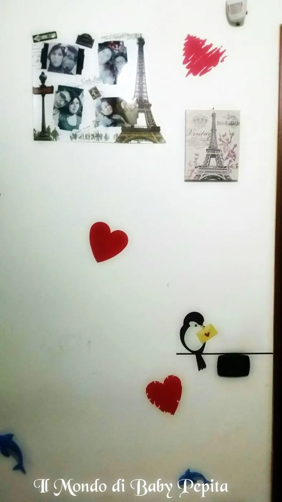
Coprendo alcune macchie e abbellendo con cuori e uccellinoHo voluto poi, dare un tocco romantico all'angolo dedicato alle foto di mia sorella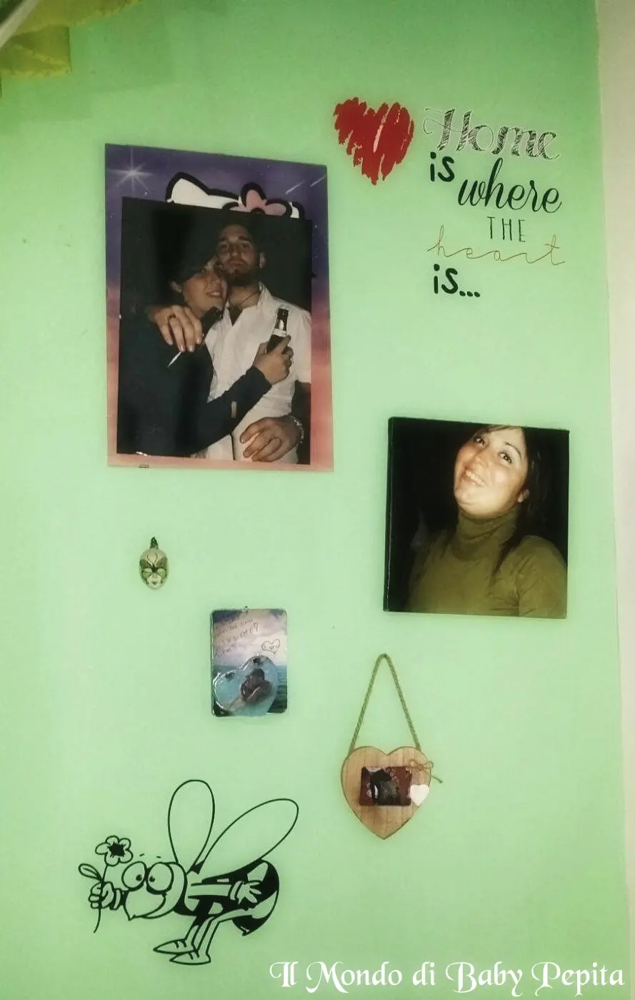
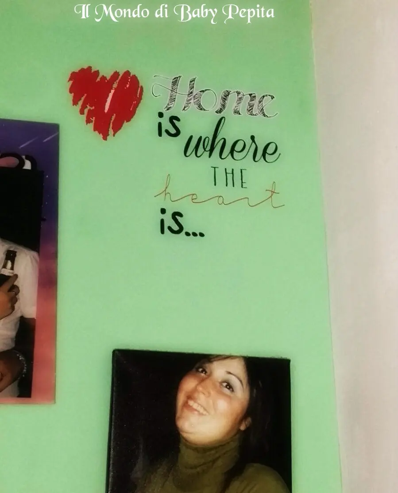
Frase e cuori grafici stampati su film vinili coprenti, in modo da non vedere la superficie sottostante.Clicca QUI per acquistare il soggetto con cuori e frase.

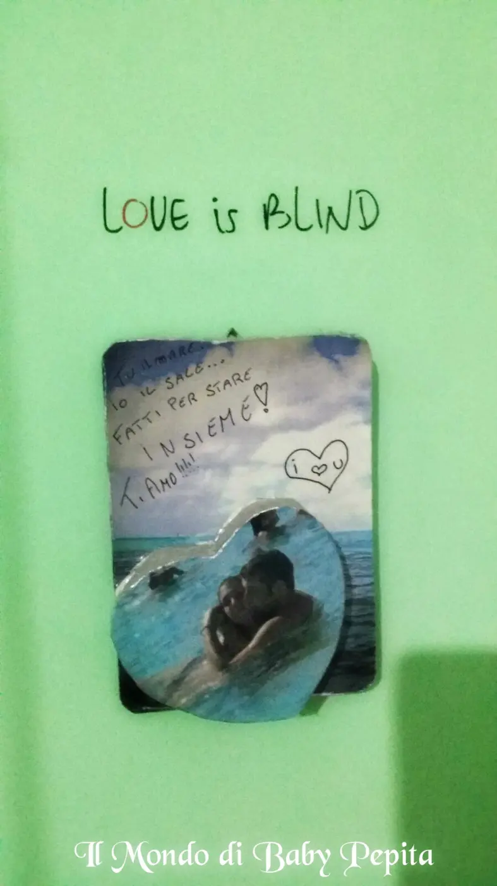
Bellissimo anche l'effetto che fanno questi stickers sulla tonalità di pareti già esistenti, risaltano molto e non si confondono tra i colori della vernice.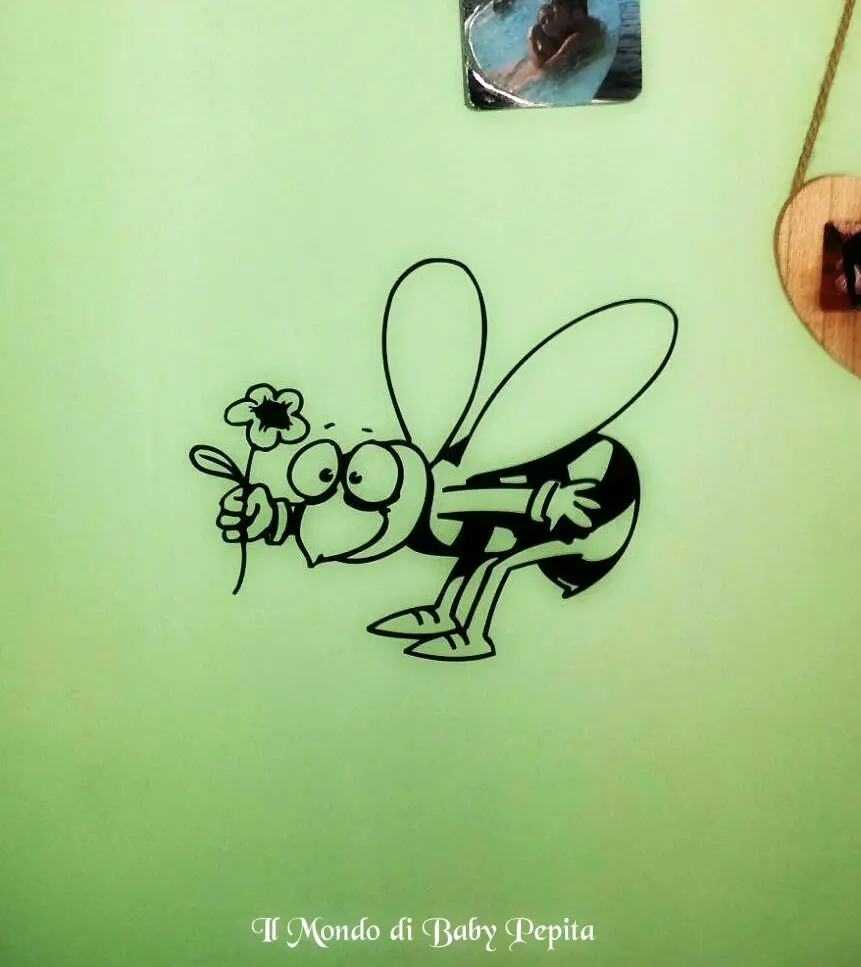
Clicca QUI per acquistare l'ape sul fiore.Un'apetta che poi si posa con un tocco leggero donandoci un fiore è davvero stupenda .La cosa che mi ha colpito tantissimo di questi adesivi è la lucentezza che resta.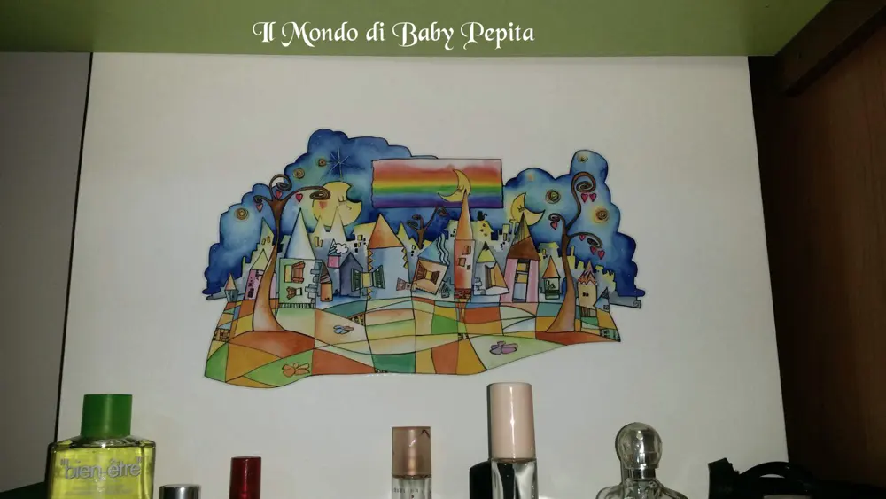
Questo quadro, perchè tale è, da l'idea del paese delle meraviglie, un paesello esistente nelle fiabe, una filastrocca che parla di castelli e cavalieri, beh mi ispira il sogno, l'idea e la fantasia e l'ho voluto posizionare in un punto dove c'era un punto bianco senza senso, ho voluto regalare un pò di colore e di gioia tra i profumi e bijoux. .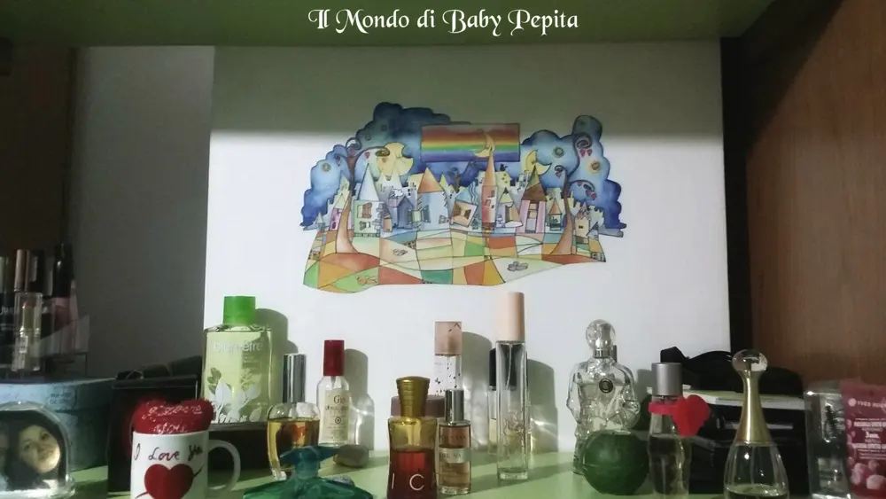
Clicca QUI per acquistare questo disegno bellissimo!
E come tocco finale voglio mostrarvi come è possibile attaccare questi stickers ovunque vogliate, non solo dunque sulle mura ma anche sulle mattonelle
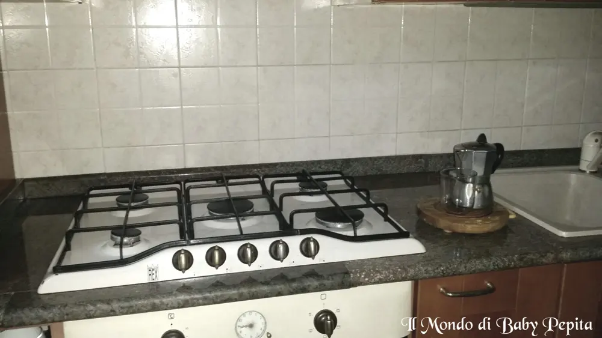
Come non potevo non attaccare sui fornelli l'amore per il caffè?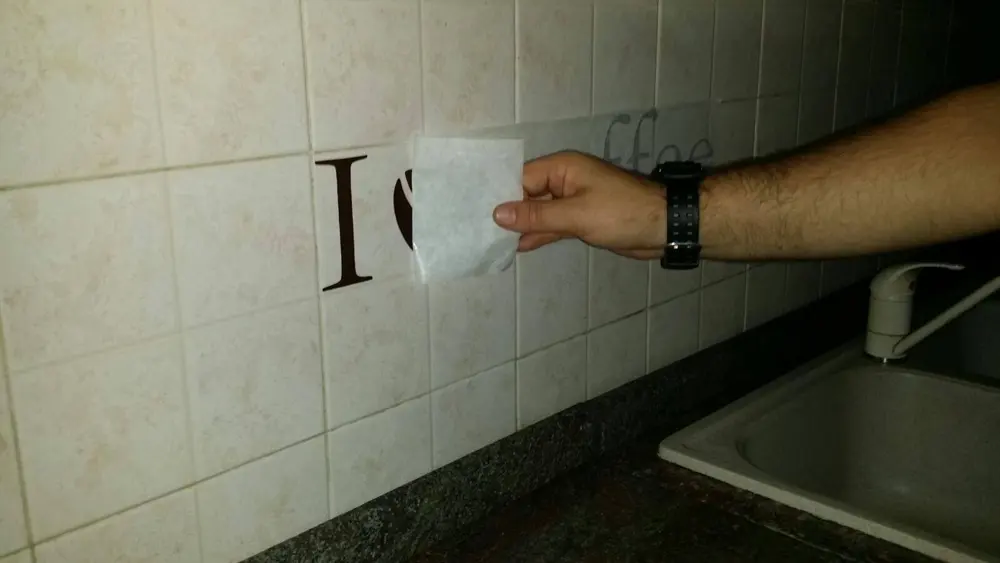
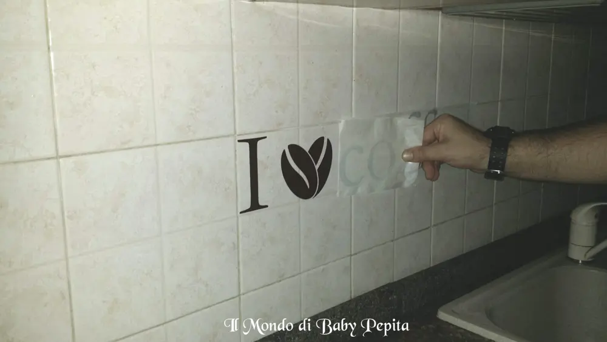
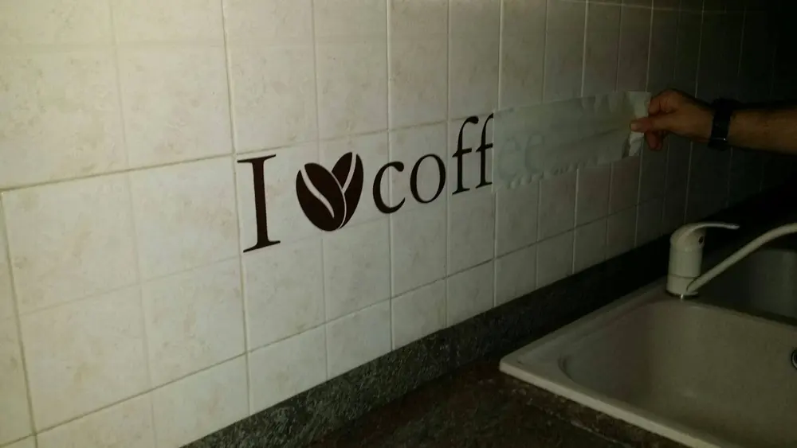
Attaccarli è semplicissimo, non serve altro che stenderli per bene e appoggiarli alla superficie scelta, un passaggio importante è quello di comprimere anche con una carta di credito, un manico di un coltello, qualcosa di piatto insomma. .Dopo di che tirare con delicatezza la pellicola sopra, come vedete in foto. .
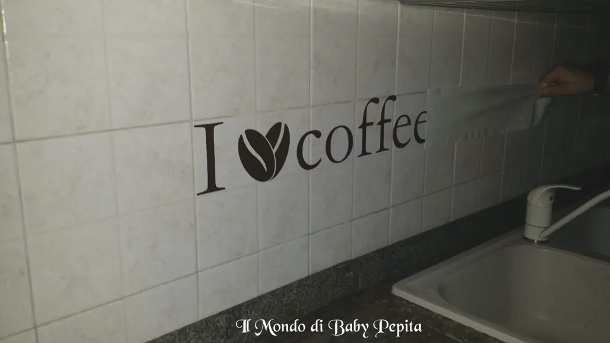
IL RISULTATO SARA' SPETTACOLARE . . . .
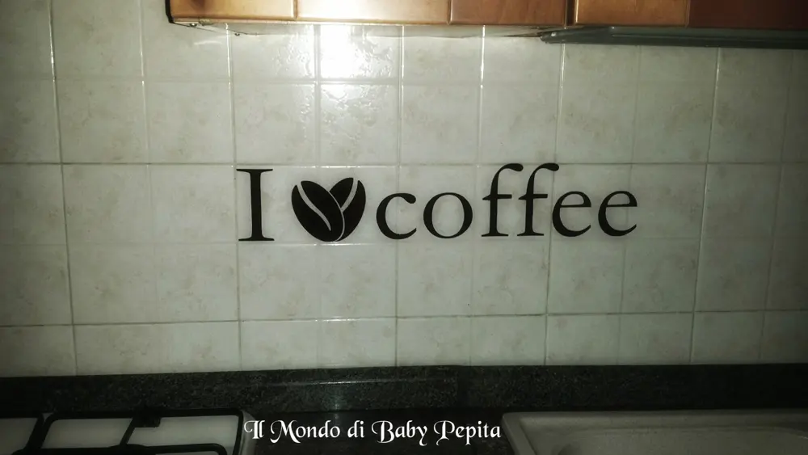
Per acquistare questo stupendo adesivo adatto a tutte le cucine sia moderne che classiche Clicca QUI
Io sono davvero soddisfatta di questi adesivi murali, non sono per nulla scadenti ma anzi, bellissime raffigurazioni e meraviglioso il materiale che è adattabile a tutte le pareti e ad ogni superficie liscia. .Vi consiglio di fare un minimo acquisto per verificare che io non dica baggianate ahahahSul loro sito mi sono persa per le bellissime grafiche che hanno, specializzati in adesivi murali di grandi formati mi sono immaginata alcune grafiche sulle mie pareti e giuro che mi piacciono tantissimo. .Di sicuro farò un acquisto!Se siete interessati questo è il loro sito web http://decorocosi.com/Sono presenti anche su Facebook e potete visitarli QUI https://www.facebook.com/decorocosi/?fref=ts
Per quanto riguarda me:FACEBOOKINSTAGRAMTWITTER